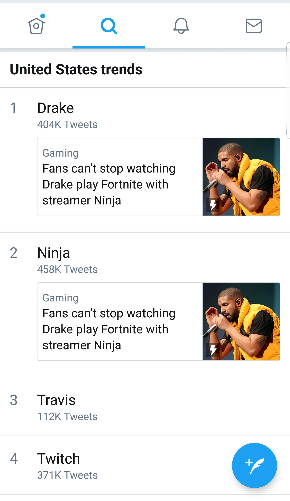

Everything you need to know to utilize the internet's largest live streaming platform for your brand.
Twitch reaches a huge audience, yet it is an under-utilized advertising platform. This guide solves four problems that are identified with advertising on Twitch:
The average stream consists of the main video, an additional webcam with a view of the streamer (optional), and the Twitch chat to the right of the main video.
Each broadcaster has their own "channel" page, which can be customized with information about the streamer and rules for the channel. This information is found below the main video and often contains links to the streamer's social media accounts and sponsors.

A large part of community building on Twitch stems from the broadcaster interacting with viewers through chat. Usually this takes the form of the streamer vocally responding to user messages typed in chat. Research suggests that consumers view streamers as important sources of information.14 Viewers can ask specific questions in chat that the streamer will see and answer. With larger audiences, users often attach their questions with monetary donations to ensure that the streamer will notice their message.
Often when a streamer is sponsored by a particular brand, viewers in the chat will ask about these brands. Jaryd "Summit1G" Lazar is sponsored by Monster Energy Drinks, and streams with a Monster mini fridge visible behind him. Viewers often ask him about his favorite flavors of the drinks and about new flavors being released.
Similarly, Guy "Dr. Disrespect" Beahm is sponsored by G-Fuel Energy Drinks. Dr. Disrespect often begins his streams by drinking G-Fuel on camera. These two streamers are polar opposites in personalities, and use these differing personalities to promote similar products in their own way.
The fast pace and sheer number of Twitch chat messages make them difficult to analyze for sentiment using text alone. However, the wide use of emotes across Twitch allow for insights into viewer reaction and sentiment. Twitch has a unique set of emotes that can be used in chat across the platform, and each streamer can also make custom emotes based on the number of subscribers their channel has. These emotes generally carry the same meaning throughout different settings and languages, making them an ideal measuring tool in capturing the sentiment of Twitch viewers in chat.17
The most popular emote on Twitch is  “Kappa” which indicates sarcasm.18 In 2016, Kappa was used in 413 million chat messages.5 Other notable emotes include
“Kappa” which indicates sarcasm.18 In 2016, Kappa was used in 413 million chat messages.5 Other notable emotes include  “PogChamp” which usually denotes excitement or awe in relation to a success and
“PogChamp” which usually denotes excitement or awe in relation to a success and  “AngryJack” which is a depiction of the brand mascot for the fast-food chain Jack in the Box.17 AngryJack is an example of the many different ways brands can advertise on Twitch. From Nov. 2, 2017 to Jan. 8, 2018, the AngryJack emote was used 275,000 times, or an average of 4435 times a day.19 “DoritoChip”
“AngryJack” which is a depiction of the brand mascot for the fast-food chain Jack in the Box.17 AngryJack is an example of the many different ways brands can advertise on Twitch. From Nov. 2, 2017 to Jan. 8, 2018, the AngryJack emote was used 275,000 times, or an average of 4435 times a day.19 “DoritoChip”  was the most-used branded emote, with 1,057,000 times between Nov. 2, 2017 and Jan. 8, 2018, for an average of 17,330 times a day in that span.
was the most-used branded emote, with 1,057,000 times between Nov. 2, 2017 and Jan. 8, 2018, for an average of 17,330 times a day in that span.
: 636,: 324,: 112
In the video above, we can see two things. One, is the amount of viewer interaction when Shroud asks viewers to subscribe to his Youtube channel, and the second is the use of emotes during memorable situations. The use of "ShroudHype" "PogChamp" and "ShroudInsane" suggest excitement as the streamer's Youtube subscribers approach 1 million. Over 1000 emotes were used in a total of 464 chat messages, meaning that most commenters used multiple emotes to express their feeling during this moment.20
: 115
In this video, we can see a competitor in the Overwatch League putting hand warmers over his eyes to the delight of the crowd and bewilderment of the casters. Twitch chat reacted to this humorous moment by sending 206 chat messages, 50% of which included the "LuL" emote. 21
: 151
Emotes aren't just used for exciting moments. In the video above, we see viewers reacting to League of Legends player Alex 'Xpecial' Chu's emotional post-game interview. Out of 238 total messages, 151 contained the "BibleThump" emote, which is often used to convey sadness. 22
These are easy to understand instances where the use of emotes can give insights to overall chat sentiment. Twitch emotes are used to express a broad range of emotions. Twitch has conducted a meta analysis of emote use.
Twitch has over 2 million content creators streaming video each month. With so many streamers and no good way to identify influencers, finding the right influencer for your brand can be quite the task. Remember, 10% of streamers account for 95% of the viewers on Twitch. 3
Using viewing data from Twitch's API, one can easily identify these top 10% of streamers by a variety of metrics such as concurrent viewers or channel followers. Since Twitch broadcasters are from all over the world, one can also see which streamers are most popular at what times. Other information that is available from the Twitch API is the most popular games being broadcasted.
For the data below, a data scraper was created to pull information from the Twitch API every 15 minutes and record it in a spreadsheet. This data scraper ran for 56 consecutive days, from Nov. 13, 2017 to Jan. 8, 2018. Viewing data from the top 15 games on Twitch, as well as the top 15 broadcasters for each game, was pulled. The complete dataset is available here.
In 56 days, Twitch garnered 2.35 billion views. During data collection, there was never a 15-minute span when something wasn't being broadcasted and viewed on Twitch. In the graphics below, you can visualize the #1 games on Twitch by percentage and a list of times each game was in the Top 5 in viewers.
During the time data was collected, League of Legends was by far the most popular game on Twitch. Just because a game wasn't the #1 game on Twitch, doesn't mean there aren't a significant amount of viewers watching. By looking at the games that are consistently in the top 5 in viewers, one can see a broader perspective on the most popular games. Tracking this data over time can give insight into up and coming titles. As an example, during data collection, the game Fortnite began its rise to being one of the most popular titles on Twitch.
This list is of streamers who were in the top 15 in viewers for 3 or more games. This means the broadcaster has a large audience devoted to the streamer and not a particular game. The data shows that the most popular games fluctuate, but these streamers stay popular no matter what the newest game may be.
Even this list is bound to change. Not mentioned on the list of "variety" streamers are Tyler1, an extremely popular League of Legends streamer, and Dr. Disrespect, who gained popularity playing H1Z1 and PLAYERUNKNOWN'S BATTLEGROUNDS. In Tyler1's case, even though he attracted over 100,000 viewers each time he streamed, he only broadcasted 13 times in the 56 day period, leaving his overall viewing numbers lower than those who broadcasted more consistently. Data from the Twitch API lets you easily see the most popular streamers for each game, and analyze who the best influencer is for your brand.
These streamers are not on this list by accident. Many of them have been full-time streamers for years. Some transition to streaming after retiring from their professional gaming career. All of these streamers know what it takes to build a community around their channel and entertain large audiences. Out of the 13 influencers listed above, 12 are males between the ages of 20-30. This doesn't mean Twitch isn't a place female influencers however, as ASUSROG highlights the gameplay of Janet "xChocoBars" Rose. WCG's Ultimate Gamer season 2 winner Kat "Mystik" Gunn also enjoys success streaming for large audiences. These popular streamers have a variety of personalities, which means the streamer with the most viewers might not always be the best influencer to partner with.
After this data was collected, the game Fortnite's popularity exploded, and with it, long-time broadcaster Ninja became the most-watched streamer on Twitch. Ninja set the record for most concurrent viewers on an individual's account with over 600,000 people watching at once while he played Fortnite with hip hop star Drake.
During this time, the top 5 trending things on Twitter in the United States were related to the Twitch stream. This was an unpredictable occurrence on Twitch, but monitoring data from the Twitch API could help your brand identify up and coming streamers to partner with and put your brand in the best position to take advantage of situations like this one.